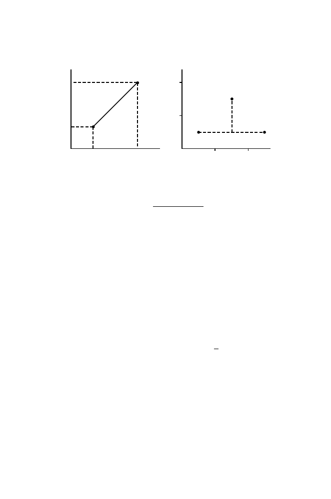

270
10 Similarity, Distance, and Clustering
0 1 2
2
1
A
B
B'
0
x
i1
x
i2
x
j1
x
j2
d
ij
A.
B.
Fig. 10.1.
Illustration of the Euclidean distance between OTU
i
and OTU
j
having
two characters (panel A) and of the city-block distance (panel B). In panel B, the
labels A, B, and B
represent different OTUs.
d
ij
=
-
.
.
/
p
k
=1
(
x
jk
−
x
ik
)
2
.
An alternative to the Euclidean distance metric is the
city-block metric
(sometimes called the “Manhattan” distance), which is defined as
d
ij
=
p
k
=1
|
x
ik
−
x
jk
|
.
This measure is analogous to the way that we would measure distances if we
were driving between points in a city laid out in blocks. (We must travel along
the city’s street grid and not the direct route “as the crow flies”.) This means
that if OTU
i
and OTU
j
are 2 units apart with respect to character 1, they
are as far apart as if they were 1 unit apart with respect to character 1 and 1
unit apart with respect to character 2 (Fig. 10.1B). If the Euclidean distance
were used in the latter case, the distance would be
√
2.
The city-block metric makes sense for some applications. Suppose that we
are comparing the following amino acid sequences:
A
· · ·
P R H L Q L A V R N
· · ·
A
· · ·
P R H L Q L A V R N
· · ·
B
· · ·
P R H V L L A V R N
· · ·
B
· · ·
P R H A Q L A V R N
· · ·
0 0 0 1 1 0 0 0 0 0
0 0 0 2 0 0 0 0 0 0
Below each pair is the number of mutations in the nucleic acid sequence un-
derlying A needed to produce B or B
. In the case on the left, there have been
two mutations, one at each of two different positions. In terms of mutations,
B and B
are equally distant from A: two mutations away. In the case on
the right, there have been two successive mutations at the same position. We